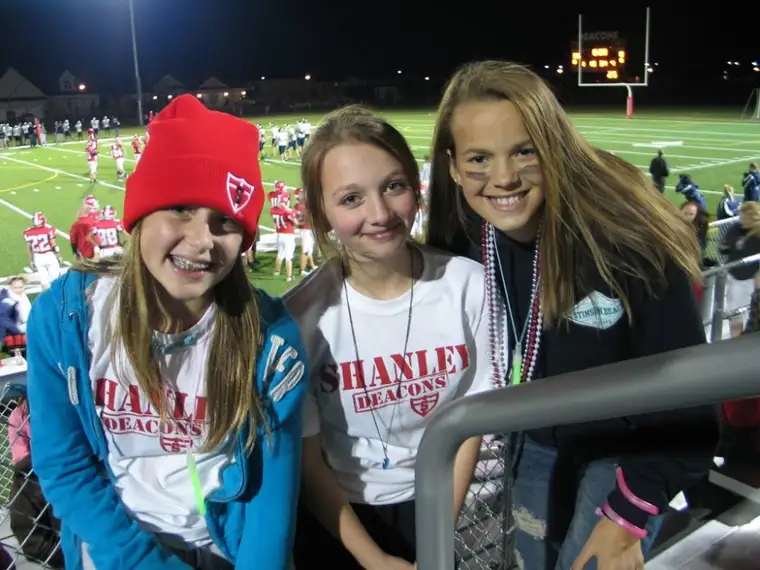

A whole lot of things are going right at present, and I find myself feeling giddy about it all. Not that everything is perfect, but there does seem to be an abundance of the good stuff these days. I know that none of this is guaranteed to hold forever, and little of it is deserved, so I see it all as gift and choose to embrace it while it’s here.
Just a few of the things that are making me smile these days….
1) This weekend, Shanley High School won Homecoming, 49-0! My oldest daughter (whose birthday is this week) enjoyed time with her friends at the game. (She’s middle girl.)

2) I had the exceptional chance to interview a couple of my favorite Catholic radio people this weekend, not by phone but in person. In particular, I have been a fan of Dr. Ray Guarendi for several years now. He dishes out some of the best parenting advice with a healthy dose of humor each week on his program, “The Doctor is In,” on Ave Maria Radio. It was a thrill for me to chat with him for a bit during the Marian Eucharistic Congress here in Fargo on Saturday. This event draws the Catholic faithful from all over the United States and Canada. Here I am listening intently to Dr. Ray answer my question, “What is the most challenging work you’ve done in your professional life?” His answer: “Potty-training my 4-year-old, hands down.”
{kind=link}

3) Later today, I get to have coffee with my writing mentor, the multi-talented children’s author and founder of Ethiopia Reads, Jane Kurtz, formerly of North Dakota, currently of Kansas (and various other national and international posts). Read Jane’s blog, The Power of One, here.
4) Tomorrow, my aunt will be in town from the Twin Cities to take in a special event with me. We get to hear best-selling author Kelly Corrigan talk here in Fargo as part of the Town Hall series. Can’t wait for that!
5) On Wednesday, I leave for my writing workshop adventure in Honesdale, PA. My traveling partner and longtime, best writing buddy, Mary, will be meeting up with me in the Mpls/St.Paul airport. Part of the adventure will include a trip to Boyds Mills Press, where my book First Salmon came into being. To read Mary’s rendition of our preparations, go to her blog, Play off the Page: Into the Clouds.
And honestly, that’s just the tip of the iceberg. Again, don’t know what I’ve done to deserve all these wonderful things (not to mention the good health of our family, a solid start to my business and more), but I feel like one of the luckiest gals around right now.
Thanking God for the grace He pours into my life so tenderly, and for all the people who add sparkles and joy to my world!
Q4U: What’s one of your weekend highlights?